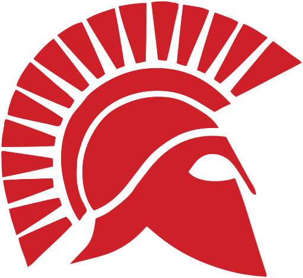
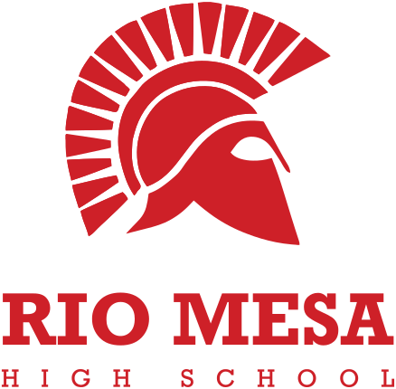

Open Sans
This guide's own page text, and the district's body face. For long paragraphs on the web, Open Sans is a comfortable alternative to Source Code Pro. Both read well on screen.

Spartans™ Logos9 files · SVG + PNGColorsHEX · RGB · CMYKTypeMontserrat · Source CodeRulesDo's & don'tsHow to use the Rio Mesa Spartans logos, colors, and type consistently across print, web, apparel, presentations, and AI-generated materials.
Everyone creating Rio Mesa materials, including staff, coaches, clubs, ASB, and boosters, should check this page before designing anything new.

Pick the mark that fits your space and the version that fits how it will be printed or displayed. Always use these files. Never recreate, redraw, trace, or approximate any Rio Mesa mark.
Keep the area around the logo free of text, photos, other logos, and the edge of the page so it can breathe and stay legible.
Minimum clear space on every side equals x, about one-sixth of the logo's height. The original kit sheet shows this as the light blue margin around each logo. When the logo is resized, the clear space scales with it.
| Recommended minimum | Screen | |
|---|---|---|
| Stacked Logo | 1.25 in wide | 120 px wide |
| Horizontal Logo | 2 in wide | 220 px wide |
| Spartan Helmet | 0.75 in wide | 64 px wide |
Below these sizes the helmet's crest lines fill in and the thin HIGH SCHOOL line disappears. For favicons, social avatars, and small embroidery, switch to the Spartan Helmet alone.
Proportions, colors, and construction are fixed. If you find yourself dragging a corner handle, changing a fill color, or adding an effect, stop and grab a different file from the library instead.
Use the full-color Stacked Logo on white or light backgrounds whenever color printing is available.

On Red, Black, or dark backgrounds, switch to the white logo.
Use the Horizontal Logo for wide, short spaces: web headers, banners, and email signatures.
Use the Spartan Helmet for square spaces: social avatars, stickers, patches, and app icons.
Stretch, squash, or distort. Hold Shift when resizing.
Recolor. Red, black, and white only, as supplied.
Add shadows, glows, outlines, bevels, or other effects.
Rotate or tilt the logo.
Put the full-color logo on Black or dark backgrounds. The black lettering and red helmet lose contrast. Use the white logo.
Type out the school name, even in the brand typeface. Place the official logo file.
Place the logo on busy photos or patterns. Find a calm area or add a solid panel behind it.
Build new lockups by combining pieces. Use the Stacked or Horizontal Logo file instead.
Red leads. Black supports: it sets the one-ink logos and dark backgrounds. Together they are the whole palette.
Red · shades & tints
Black · shades & tints
Base colors are for primary brand moments: logos, headers, signage. Shades and tints are for supporting work such as web UI, charts, table fills, and backgrounds. For print, match the official CMYK values.
RGB values here are calculated from the official HEX codes. The original kit sheet lists RGB as percentages, which are converted here to the usual 0 to 255 scale. Pantone numbers are not part of this kit, so for spot-color jobs ask Teo before committing to a PMS match.
Black, grayscale, and white logo versions use the black, gray, and white built into those files. They are for one-ink and photocopy jobs, so they aren't part of the brand palette unless listed above.
WCAG requires at least 4.5:1 contrast for normal body text, and at least 3:1 for large text (18px and up, or 14px bold) and UI elements like icons, buttons, and input borders. Ratios below are calculated from the official HEX values.
| Color | As text on white | As text on black | White text on it | Black text on it |
|---|
Red text on Black, or Black text on Red, at body sizes. They measure 3.9:1: fine for large headlines (24px or bolder) but under the 4.5:1 body-text minimum. Use white text on either color instead.
Thin red text on photos or Black. Red lettering on dark photos loses edge definition. Use the white logo on dark backgrounds.
The Rio Mesa kit pairs Montserrat Semi-Bold for headlines with Source Code Pro for body text. Both are free, both cover accents, ñ, ¿, and ¡, and both are included on this page. Use the tester below: type your own wording or pick a preset, drag the slider to resize, and choose a color.
Character set · Montserrat · hover to inspect
This guide's own page text, and the district's body face. For long paragraphs on the web, Open Sans is a comfortable alternative to Source Code Pro. Both read well on screen.
Type never replaces the logo. Never type the school name in Montserrat as a stand-in for the logo. Always place the official logo files. Set Spanish in Montserrat or Source Code Pro; both include the accented letters.
Image generators can't reproduce the Spartan exactly. Ask one to "include the Rio Mesa logo" and it invents a new, slightly wrong mascot with made-up lettering. Use AI for the artwork only, then add the real logo and text yourself.
Create a flyer for Rio Mesa High School's homecoming with the Spartans logo and school colors.
The tool will invent a new helmet and guess at "school colors."
Generate a bright, photographic stadium-at-night background in black with red #CE2028 light. Leave empty negative space in the upper third. No text, no logos, no mascots.
Hex codes, not color names. Then add the logo and words yourself.
Pick a common job, or describe what you're making, to get the right mark, version, colors, and rules for it.